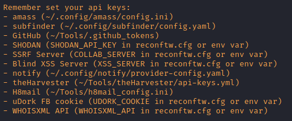
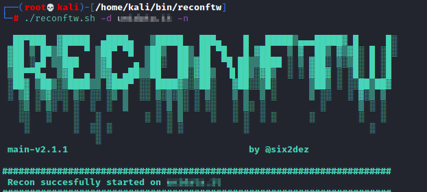

reconftw (software all in one)
GITHUB:
https://github.com/six2dez/reconftwInstallation:
git clone https://github.com/six2dez/reconftw; cd reconftw/; ./install.sh
Example usage(subdomain enumeration):
./reconftw.sh -d example.com -s --deep
-d [domain] → target domain
-s → Perform subdomain enumeration
--deep → run more time
taking steps but return more subdomains
Update/Run
 TARGET
OPTIONS
| Flag |
Description |
| -d |
Single Target domain (example.com) |
| -l |
List of targets (one per line) |
| -m |
Multiple domain target (companyName) |
| -x |
Exclude subdomains list (Out Of Scope) |
| -i |
Include subdomains list (In Scope) |
MODE OPTIONS
| Flag |
Description |
| -r |
Recon - Full recon process (without attacks like sqli,ssrf,xss,ssti,lfi etc.) |
| -s |
Subdomains - Perform only subdomain enumeration, web probing, subdomain takeovers |
| -p |
Passive - Perform only passive steps |
| -a |
All - Perform whole recon and all active attacks |
| -w |
Web - Perform only vulnerability checks/attacks on particular target |
| -n |
OSINT - Performs an OSINT scan (no subdomain enumeration and attacks) |
| -c |
Custom - Launches specific function against target |
| -h |
Help - Show this help menu |
GENERAL OPTIONS
| Flag |
Description |
| --deep |
Deep scan (Enable some slow options for deeper scan, vps intended mode) |
| -f |
Custom config file path |
| -o |
Output directory |
| -v |
Axiom distributed VPS |
Subdomain Resources
(-s option)
• Passive (
subfinder,
assetfinder,
amass,
findomain,
crobat,
waybackurls,
github-subdomains,
Anubis,
gauplus)
• Certificate
transparency (
ctfr,
tls.bufferover and
dns.bufferover))
• Bruteforce (
puredns)
• Permutations (
Gotator)
• JS files & Source Code Scraping (
gospider)
• DNS Records (
dnsx)
• Google Analytics ID (
AnalyticsRelationships)
• Recursive
search.
• Subdomains takeover (
nuclei)
• DNS
takeover (
dnstake)
• DNS Zone Transfer (
dnsrecon)
Osint resources
(-n option)
• Domain information parser (
domainbigdata)
• Emails addresses and users (
theHarvester,
emailfinder)
• Password leaks (
pwndb and
H8mail)
• Metadata finder (
MetaFinder)
• Google Dorks (
uDork)
• Github Dorks (
GitDorker)
Bibliography:https://sidxparab.gitbook.io/subdomain-enumeration-guide/automation